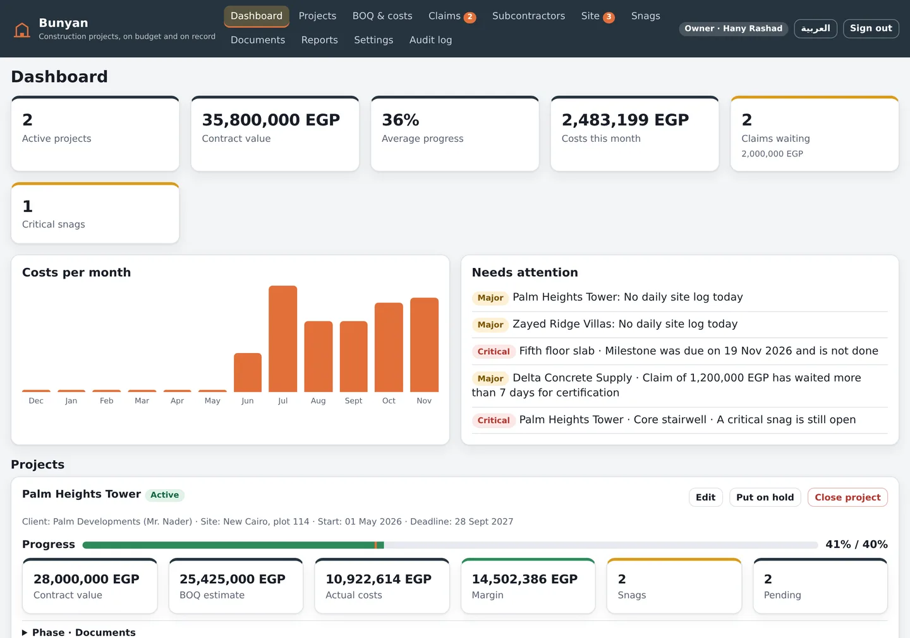
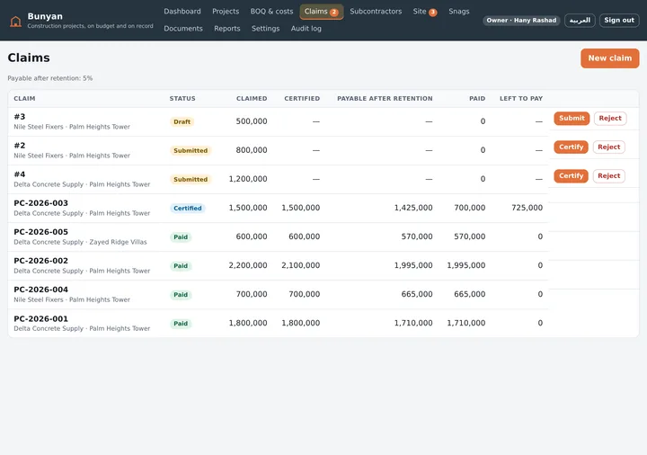
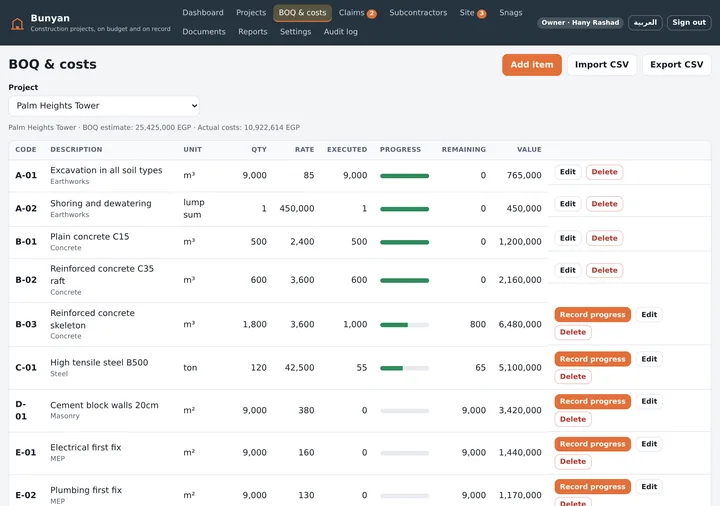
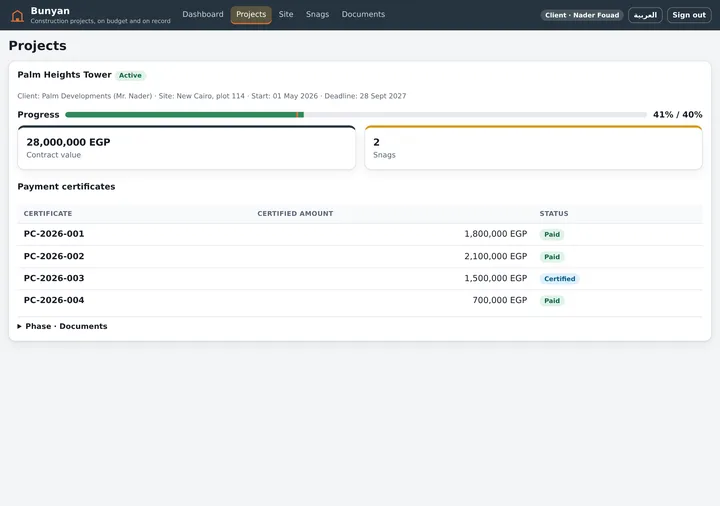
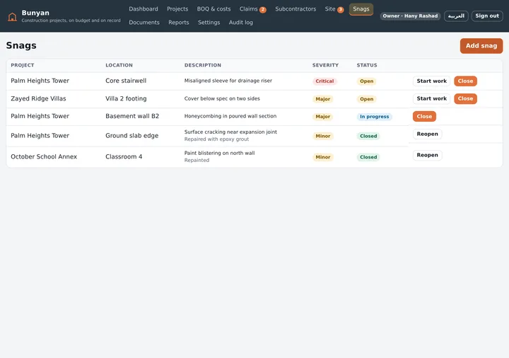
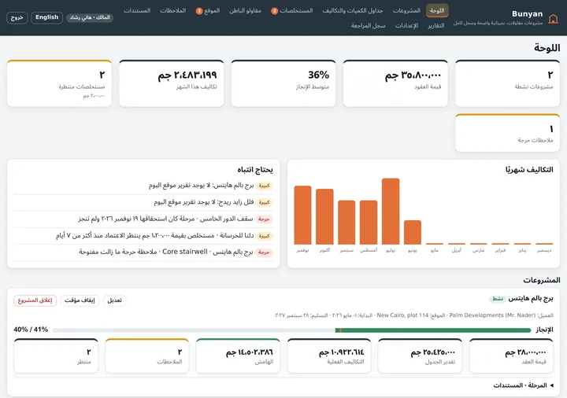
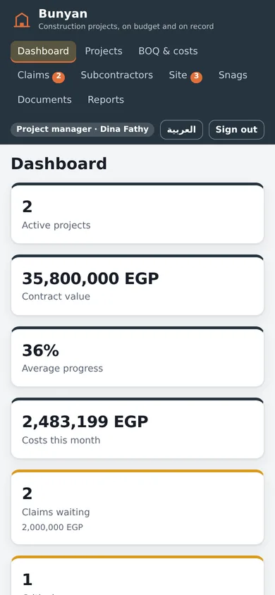

PORTFOLIO DEMO / BUILT / LIVE DEMO
Bunyan
Every site, every pound, on the record. Construction management the way a contractor actually runs it.

ACTUAL BUILDBunyan · Owner dashboard. Fictional company, projects and subcontractors.
The problem
A contracting company runs on paper and memory. The BOQ lives in a spreadsheet nobody updates after the award, the site engineer's daily report arrives on WhatsApp if it arrives at all, the subcontractor's claim is negotiated from two different notebooks, and the client calls the owner directly because nobody can show him what his money built this month.
What was built
A project management system for one contracting company with five roles. Projects carry phases with weights that must total a hundred, milestones with due dates, and a bill of quantities whose lines hold the estimate. Site engineers record executed quantities against BOQ lines and file a daily log per project (one per day, never in the future), request materials and mark them received. The accountant books actual costs against BOQ lines and pays certified claims. Subcontractor claims move from draft to submitted to certified to paid: the owner certifies and a numbered payment certificate (PC-2026-003 and so on) is issued, retention is held back from every certified amount, and the payable balance always reflects the current retention setting. Claims can never exceed the contract value, certification cannot exceed the claim, and a payment cannot exceed the certified amount minus retention. Snags carry a severity and a lifecycle, and a project cannot close while snags are open or material requests are pending. The client signs in read-only and sees his project's progress, milestones, payment certificates, snags and documents, never the internal costs, rates or subcontractor names. The interface works in Arabic (right to left) and English, and on a phone.
What changes for the company
Before. Progress is a feeling. The owner finds out a milestone slipped when the client calls. The subcontractor's claim is argued from memory, the retention is calculated on a calculator, and the daily log is a chat message that scrolls away.
After. The dashboard shows 41% done against 40% planned, the overdue milestone and the critical snag by name. A claim beyond the contract value is refused by the server, not by an argument. The certificate number, the certified amount and the retention are on record, and the client reads his own certificates himself instead of calling.
Why it matters to a contractor
Margin in contracting is made or lost in the gap between the estimate and the actuals, and in the weeks a certified claim waits unpaid. A system that keeps both in plain view is not administration, it is the business. These are designed situations, not measured results from a real company.
The approach
No framework and no build step: plain JavaScript pages, one serverless API function and one logic file that holds every rule (validation, BOQ math, claim lifecycle, retention, per-role views, the deterministic sample company). The same file runs in the API, the browser and the test suites. Permissions are enforced on the server on every operation, create operations carry idempotency keys so a retried request never books twice, and every action lands in an audit log the owner alone can read. What a role must not see is removed from the response on the server, not hidden on screen.
The result
A live demo anyone can open. Sign in as the owner (PIN 1111), project manager (2222), site engineer (3333), accountant (4444) or client (5555); the PINs are on the sign-in screen. The sample company has 3 projects, 6 phases and 12 milestones on the flagship tower alone, an 18-line BOQ across three projects, 6 subcontractors with 6 contracts, 8 claims at every stage of the cycle, and six months of cost history. Verification: 19 unit tests and 252 browser and API checks run to completion against the live site, covering forged tokens, malformed and oversized bodies, every role's permission lane, all 34 write operations refused for the read-only client, the full claim-certification-payment cycle with retention math, progress and budget guards, materials, logs, snags and document rules, idempotency keys, the client never seeing internal money even on typed routes, hostile text shown as plain text, Arabic RTL and phone layouts.
Evidence & production limits
One shared demo company: everyone sees and changes the same data. State is kept in server memory only, so it resets about every six hours and whenever the server instance restarts. Sign-in is a PIN printed on the sign-in screen, so it must not hold real company data. The company, projects and people are fictional.
Known gaps: no database, no real authentication, documents are register entries rather than file uploads, no email or SMS notifications, no variation orders or client invoicing, and no multi-company tenancy. Some server error messages stay in English on the Arabic screens. Direction, scope and delivery: Nada Gamal.
Next chapter
A real database with per-company tenancy, document file storage, client invoicing and variation orders, WhatsApp or email alerts on certified claims and overdue milestones, and subcontractor self-service claim submission would be the next implementation steps.
Inside the build
Open any preview to see the full capture. Captures show demonstration content, not evidence of client use.





